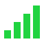

With some passion and html experience, this web page and balance document has been brought to reality. This balance project is solely for fun and a way to keep my ideas listed for mutuals and any other interested players. Currently, there are no future plans to implement these concepts into a mod or server.
With that said, here are some things you might want to know before diving in:

Adamant - Changes should be implemented posthaste